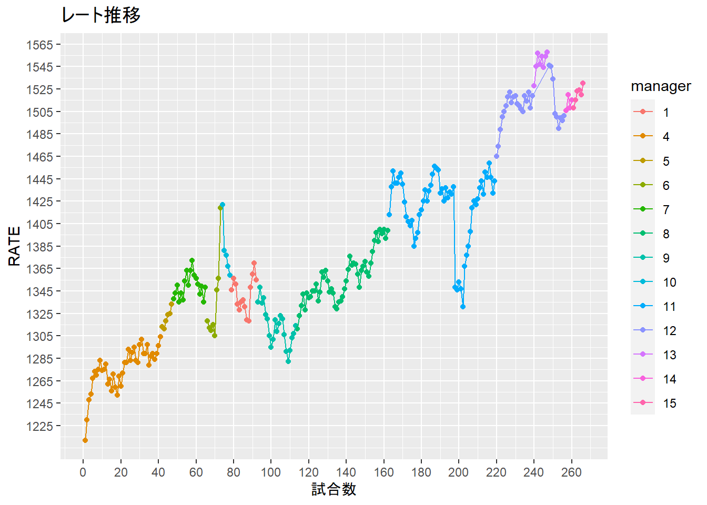
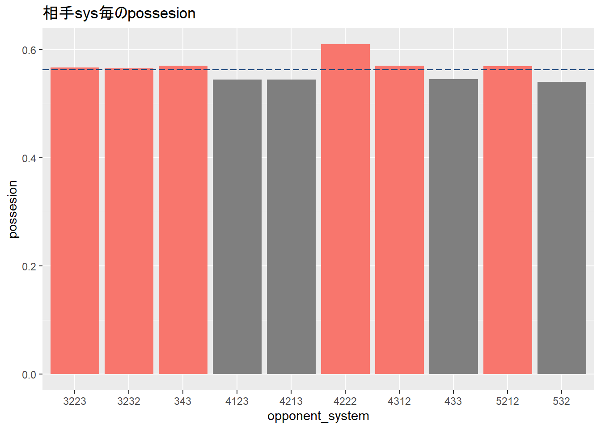
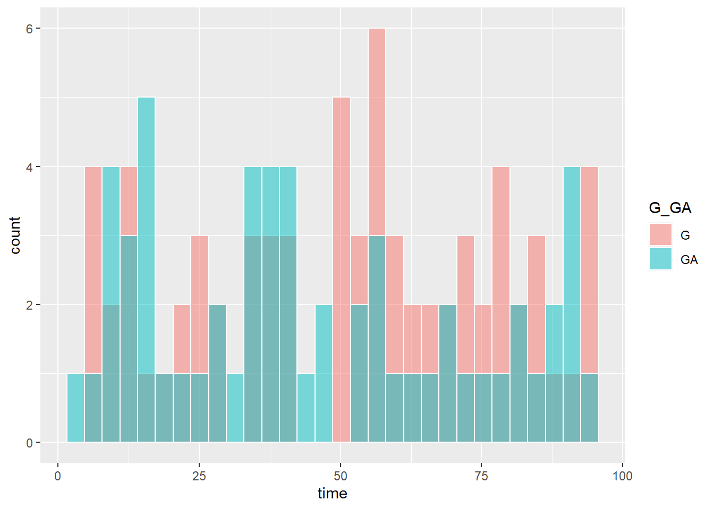

dataset ~ basic stats
2929porno
2022/2/20
1 データ整形
2 記述統計
## オンラインマッチ対戦
score %>%
filter(CP == 0) %>%
count()## # A tibble: 1 x 1
## n
## <int>
## 1 2563 フォーメーション分析
3.1 自陣フォーメーション
score_manager %>%
filter(CP == 0) %>%
group_by(manager) %>%
summarise(n = n(),
GF = mean(GF,na.rm = T),
GA = mean(GA,na.rm = T),
win = sum(W),
shot = mean(shot,na.rm = T),
pass = mean(pass,na.rm = T),
Win_rate = mean(W),
lose_rate = mean(L),
possesion = mean(possesion,na.rm = T)) %>%
formattable(list(
manager = formatter("span", style = ~style(font.weight = "bold")),
GF = color_bar("#becfed"),
GA = color_bar("#ecc6ba"),
Win_rate = formatter("span",
style = x ~ style(
color = ifelse(x <= 0.5, "red", "#2b2b2b"))),
lose_rate = formatter("span",
style = x ~ style(
color = ifelse(x >= 0.3, "red", "#2b2b2b")))))| manager | n | GF | GA | win | shot | pass | Win_rate | lose_rate | possesion |
|---|---|---|---|---|---|---|---|---|---|
| 1 | 14 | 1.714286 | 1.714286 | 7 | 3.923077 | 0.8246154 | 0.5000000 | 0.3571429 | 0.5261538 |
| 4 | 41 | 1.853659 | 1.365854 | 23 | 5.375000 | 0.8331250 | 0.5609756 | 0.2926829 | 0.5534375 |
| 5 | 6 | 2.666667 | 1.666667 | 4 | 6.000000 | 0.8366667 | 0.6666667 | 0.0000000 | 0.5750000 |
| 6 | 8 | 2.250000 | 0.750000 | 5 | 4.571429 | 0.8542857 | 0.6250000 | 0.1250000 | 0.5128571 |
| 7 | 18 | 2.055556 | 1.444444 | 10 | 5.545455 | 0.8281818 | 0.5555556 | 0.3333333 | 0.5318182 |
| 8 | 49 | 1.959184 | 1.489796 | 26 | 4.902439 | 0.8331707 | 0.5306122 | 0.3061224 | 0.5651220 |
| 9 | 21 | 2.000000 | 1.809524 | 10 | 4.888889 | 0.8455556 | 0.4761905 | 0.3809524 | 0.5661111 |
| 10 | 5 | 1.000000 | 2.600000 | 0 | 3.000000 | 0.8020000 | 0.0000000 | 0.8000000 | 0.5180000 |
| 11 | 57 | 2.140351 | 1.000000 | 35 | 5.051282 | 0.8320513 | 0.6140351 | 0.2280702 | 0.5597436 |
| 12 | 29 | 1.896552 | 1.241379 | 16 | 4.750000 | 0.8275000 | 0.5517241 | 0.1724138 | 0.5616667 |
| 13 | 8 | 1.750000 | 1.875000 | 4 | 4.000000 | 0.8016667 | 0.5000000 | 0.3750000 | 0.5650000 |
3.2 レート推移（監督色分け）
score_manager %>%
filter(CP == 0) %>%
ggplot(aes(x= 1:nrow(.), y= rate, color = factor(manager)))+
geom_point()+
geom_line()+
labs(x = "試合数", y = "RATE", title = "レート推移",
family = "Meiryo", color = "manager")+
scale_y_continuous(breaks = seq(1225, 1600, by = 20))+
scale_x_continuous(breaks = seq(0, 500, by = 20))
3.3 相手フォーメーションごとの戦績
#全戦績平均
score %>%
filter(CP == 0,
manager %in% c(11,12)) %>%
summarise(GF = mean(GF),
GA = mean(GA),
Win_rate = mean(W),
lose_rate = mean(L),
n = n(),
rate = mean(rate)) %>%
filter(n >= 2)## # A tibble: 1 x 6
## GF GA Win_rate lose_rate n rate
## <dbl> <dbl> <dbl> <dbl> <int> <dbl>
## 1 2.06 1.08 0.593 0.209 86 1450.#相手フォーメーションごと戦績
result_opsys <- score_manager %>%
filter(CP == 0,
manager %in% c(11,12)) %>%
group_by(opponent_system) %>%
summarise(GF = mean(GF),
GA = mean(GA),
Win_rate = mean(W),
lose_rate = mean(L),
shot = mean(shot,na.rm = T),
pass = mean(pass,na.rm = T),
possesion = mean(possesion,na.rm = T),
n = n(),
rate = min(rate)) %>%
mutate(across(2:8,round,3)) %>%
filter(n >= 2)
result_opsys## # A tibble: 11 x 10
## opponent_system GF GA Win_rate lose_rate shot pass possesion n
## <chr> <dbl> <dbl> <dbl> <dbl> <dbl> <dbl> <dbl> <int>
## 1 3223 2 1 0.6 0.4 5.33 0.823 0.567 5
## 2 3232 1.33 0.333 0.667 0.333 2.5 0.825 0.565 3
## 3 343 1 0.333 0.667 0.333 4 0.855 0.57 3
## 4 4123 1.67 0.833 0.833 0 3.6 0.826 0.544 6
## 5 4213 2.88 1.12 0.625 0.25 7.4 0.848 0.544 8
## 6 4222 0.75 0.25 0.5 0 3.5 0.81 0.61 4
## 7 4312 2.36 1.23 0.581 0.194 5.44 0.828 0.57 31
## 8 433 2.33 1 0.667 0.333 6.5 0.87 0.545 3
## 9 5212 2.1 1.1 0.6 0.1 4.88 0.842 0.569 10
## 10 532 3.5 1 1 0 5 0.83 0.54 2
## 11 <NA> 2 1.5 0.5 0.5 5 0.86 0.59 2
## # ... with 1 more variable: rate <dbl>#システムごとのシュート数
score_manager %>%
filter(CP == 0,
manager %in% c(11,12)) %>%
ggplot()+
geom_boxplot(aes(x = opponent_system, y = shot,
fill = opponent_system))+
geom_hline(yintercept = mean(score_manager$shot, na.rm = T))+
labs(fill = "system", title = "相手sys毎のシュート数")+
theme(axis.text.x = element_text(angle = 45, hjust = 1))## Warning: Removed 23 rows containing non-finite values (stat_boxplot).
#システムごとのpossesion
result_opsys %>%
arrange(desc(opponent_system)) %>%
ggplot()+
geom_bar(aes(x = opponent_system, y = possesion,
fill = opponent_system), stat = "identity")+
geom_hline(yintercept = mean(result_opsys$possesion), na.rm = T,
color = "#18437a", lty = 1, size = 1.5)
#結果1
result_opsys %>%
rename("op_sys" = opponent_system) %>%
formattable(list(
manager = formatter("span", style = ~style(font.weight = "bold")),
GF = color_bar("#becfed"),
GA = color_bar("#ecc6ba"),
Win_rate = formatter("span",
style = x ~ style(
color = ifelse(x <= 0.5, "red", "#2b2b2b"))),
lose_rate = formatter("span",
style = x ~ style(
color = ifelse(x >= 0.3, "red", "#2b2b2b")))))| op_sys | GF | GA | Win_rate | lose_rate | shot | pass | possesion | n | rate |
|---|---|---|---|---|---|---|---|---|---|
| 3223 | 2.000 | 1.000 | 0.600 | 0.400 | 5.333 | 0.823 | 0.567 | 5 | 1438 |
| 3232 | 1.333 | 0.333 | 0.667 | 0.333 | 2.500 | 0.825 | 0.565 | 3 | 1385 |
| 343 | 1.000 | 0.333 | 0.667 | 0.333 | 4.000 | 0.855 | 0.570 | 3 | 1435 |
| 4123 | 1.667 | 0.833 | 0.833 | 0.000 | 3.600 | 0.826 | 0.544 | 6 | 1449 |
| 4213 | 2.875 | 1.125 | 0.625 | 0.250 | 7.400 | 0.848 | 0.544 | 8 | 1353 |
| 4222 | 0.750 | 0.250 | 0.500 | 0.000 | 3.500 | 0.810 | 0.610 | 4 | 1408 |
| 4312 | 2.355 | 1.226 | 0.581 | 0.194 | 5.435 | 0.828 | 0.570 | 31 | 1331 |
| 433 | 2.333 | 1.000 | 0.667 | 0.333 | 6.500 | 0.870 | 0.545 | 3 | 1392 |
| 5212 | 2.100 | 1.100 | 0.600 | 0.100 | 4.875 | 0.842 | 0.569 | 10 | 1411 |
| 532 | 3.500 | 1.000 | 1.000 | 0.000 | 5.000 | 0.830 | 0.540 | 2 | 1367 |
| NA | 2.000 | 1.500 | 0.500 | 0.500 | 5.000 | 0.860 | 0.590 | 2 | 1407 |
#結果2
#plot
result_opsys %>%
mutate(opponent_system = as.factor(opponent_system)) %>%
arrange(desc(opponent_system) )%>%
ggplot(aes(x = opponent_system, y = Win_rate,
fill = Win_rate))+
geom_hline(yintercept = 0.5, lty = 2)+
geom_bar(aes(y = Win_rate), stat = "identity")+
geom_text(aes(label = round(Win_rate,3)),
hjust = 1.4, color = "white")+
scale_fill_gradientn(colors = met.brewer("Hokusai2"))+
labs(y = "勝率", fill = "勝率",
title = "相手システムごとの戦績")+
coord_flip()
#ポゼッションについて##ポゼッションには「時間」と「回数」の2軸がある
##支配率及び成功率と、得失点及び勝率の関係
library(corrplot)## corrplot 0.92 loadedscore %>%
select(id,manager,system,opponent_rate,possesion,
shot,pass,GF,GA,W,L,D) %>%
drop_na(id,manager,system,opponent_rate,possesion,
shot,pass,GF,GA,W,L,D) %>%
cor() %>%
corrplot(tl.col="black")
# 支配率＆得点
# 支配率＆失点
# 支配率＆勝率
# 支配率＆負率
# パス成功率＆得点
# パス成功率＆失点
# パス成功率＆勝率
# パス成功率＆負率# Goalの詳細分析## データセット
# データ概観
goal_data <- read_csv("Goal.csv")## Rows: 512 Columns: 10## -- Column specification --------------------------------------------------------
## Delimiter: ","
## chr (7): G, A, GA, foot, way to Goal, cross, setplay
## dbl (3): id, time, middle##
## i Use `spec()` to retrieve the full column specification for this data.
## i Specify the column types or set `show_col_types = FALSE` to quiet this message.goal_data <- goal_data %>%
filter(!is.na(id)) %>%
mutate(G_count = if_else(!is.na(G),1,0),
A_count = if_else(!is.na(A),1,0),
GA_count = if_else(!is.na(GA),1,0))
goal_data %>%
count(G) %>%
drop_na() %>%
arrange(desc(n)) %>%
mutate(game = n_distinct(goal_data$id))## # A tibble: 11 x 3
## G n game
## <chr> <int> <int>
## 1 Rummenigge 17 32
## 2 Neymar 11 32
## 3 Messi 7 32
## 4 Cruijff 6 32
## 5 Totti 6 32
## 6 Isak 4 32
## 7 Beckham 3 32
## 8 Haaland 2 32
## 9 - 1 32
## 10 kante 1 32
## 11 Vieira 1 32#ゴールまでの経路（ヒストグラム）
goal_data %>%
filter(!is.na(G)) %>%
group_by(id) %>%
ggplot(aes(`way to Goal`))+
geom_histogram(stat = "count")## Warning: Ignoring unknown parameters: binwidth, bins, pad
goal_data %>%
filter(!is.na(GA)) %>%
group_by(id) %>%
ggplot(aes(`way to Goal`))+
geom_histogram(stat = "count")## Warning: Ignoring unknown parameters: binwidth, bins, pad
3.4 ゴールの価値
3.4.1 勝利に必要な得点数
# 勝利と得点数のバブルチャート
score %>%
filter(CP == 0) %>%
group_by(W,GF) %>%
count() %>%
ggplot(aes(x = W, y = GF))+
geom_point(aes(size = n))
# 各resultごとの平均得失点数
score %>%
filter(CP == 0) %>%
group_by(result) %>%
summarise(GF = mean(GF),
GA = mean(GA)) ## # A tibble: 3 x 3
## result GF GA
## <chr> <dbl> <dbl>
## 1 引 1.48 1.48
## 2 勝 2.64 0.721
## 3 負 0.972 2.61# 勝利した際の得点ヒストグラム
score %>%
filter(CP == 0,
result == "勝") %>%
ggplot(aes(GF))+
geom_histogram(aes(y=..density..),color = "#f2f7f4",
binwidth = 1)+
scale_x_continuous(breaks = seq(0,8,by=1))# 相対度数
score %>%
filter(CP == 0) %>%
group_by(GF) %>%
summarise(W = mean(W),
L = mean(L),
D = mean(D)) %>%
gather(key = results,value = rate, -GF) %>%
ggplot(aes(GF,rate,fill = results, color = results))+
geom_point()+
geom_line()
# 勝利した際の得失点バブルチャート
score %>%
filter(CP == 0,
result == "勝") %>%
group_by(GF,GA) %>%
count() %>%
ggplot()+
geom_point(aes(x = GF, y = GA, size = n))+
scale_x_continuous(breaks = seq(0,8,by=1))+
scale_y_continuous(breaks = seq(0,8,by=1))
3.4.2 何点目の得点がもっとも価値があるか
# goal_dataで分析
goal_data %>%
group_by(id) %>%
mutate(No. = row_number()) %>%
view()
# score_managerのデータで分析
Value_of_theGoal <- score %>%
filter(CP == 0) %>%
group_by(GF) %>%
summarise(W = mean(W)) %>%
mutate(lag = lag(W),
marginal = W-lag(W)) %>%
replace_na(replace = list(marginal = 0)) %>%
rename("No." = GF)
#GFのWに対する相対度数の微分（限界効果を計算）
Value_of_theGoal %>%
ggplot(aes(No.,marginal))+
geom_point()+
geom_line()+
scale_x_continuous(breaks = seq(0,8,by=1))
3.4.3 得点価値ランキング
Goal_Value_rank <- score_manager %>%
filter(CP == 0,
manager %in% c(11,12)) %>%
gather(key = "score", value = "scorer", #scorerをまとめる
starts_with("score")) %>%
filter(scorer != "失点") %>%
group_by(id) %>%
mutate(No. = row_number()) %>%
left_join(Value_of_theGoal, by = "No.") %>%
group_by(scorer) %>%
summarise(n = n(),
value = sum(marginal,rm.na = T)) %>%
arrange(desc(value))
Goal_Value_rank## # A tibble: 16 x 3
## scorer n value
## <chr> <int> <dbl>
## 1 Rummenigge 50 15.4
## 2 Cruijff 30 8.62
## 3 Totti 22 7.40
## 4 Messi 25 7.15
## 5 Neymar 14 4.22
## 6 Havertz 7 2.60
## 7 Nakata 6 2.47
## 8 Isak 4 2.36
## 9 Vieira 5 2.36
## 10 ー 4 2.16
## 11 Ronaldinho 3 2.04
## 12 Beckham 3 2.00
## 13 Beckenbauer 3 1.84
## 14 Haaland 2 1.68
## 15 kante 1 1.24
## 16 viera 1 1.244 ゴール数、アシスト数
score_manager %>%
filter(id > max(id)-30) %>% #直近３０試合に絞る
filter(CP == 0,
manager %in% c(11,12)) %>%
gather(key = "score", value = "scorer", #scorerをまとめる
starts_with("score")) %>%
count(scorer) %>%
arrange(desc(n)) %>%
filter(!str_detect(scorer,"失点|ー"))## # A tibble: 9 x 2
## scorer n
## <chr> <int>
## 1 Rummenigge 9
## 2 Messi 7
## 3 Neymar 7
## 4 Cruijff 4
## 5 Isak 4
## 6 Totti 3
## 7 Haaland 2
## 8 Beckham 1
## 9 viera 1 # select(id,score,scorer) %>%
# filter(scorer != "失点") %>%
# group_by(id) %>%
# mutate(No. = row_number()) %>%
# select(id,score,scorer,No.) %>%
# arrange(id)
score_manager %>%
filter(id > max(id)-30) %>%
filter(CP == 0,
manager %in% c(11,12)) %>%
gather(key = "assist", value = "assistant",
starts_with("assist")) %>%
count(assistant) %>%
arrange(desc(n)) %>%
filter(!str_detect(assistant,"失点|ー"))## # A tibble: 7 x 2
## assistant n
## <chr> <int>
## 1 Totti 9
## 2 Messi 7
## 3 Arnold 3
## 4 Beckham 3
## 5 Cruijff 3
## 6 Ronaldinho 3
## 7 Petit 24.1 得点時間
view(goal_data)
# 試合数と試合ごとの平均ゴール数（被ゴール数）
goal_data %>%
summarise(id = length(unique(id)),
G = sum(G_count),
GA = sum(GA_count)) %>%
mutate(Ggame = G/id,
GAgame = GA/id)## # A tibble: 1 x 5
## id G GA Ggame GAgame
## <int> <dbl> <dbl> <dbl> <dbl>
## 1 32 59 46 1.84 1.44# histgram
goal_data %>%
mutate(G_GA = if_else(G_count==1,"G","GA")) %>%
ggplot(aes(time))+
geom_histogram(aes(fill = G_GA),
position = "identity",
alpha = 0.5,
color = "white")## `stat_bin()` using `bins = 30`. Pick better value with `binwidth`.
# Violin plot
goal_data %>%
mutate(G_GA = if_else(G_count==1,"G","GA")) %>%
ggplot(aes(time,G_GA,fill = G_GA))+
geom_point()+
geom_violin(alpha = 0.5)# 得点者ごとのGoal Time
goal_data %>%
filter(!is.na(G)) %>%
ggplot(aes(time))+
geom_histogram(binwidth = 10)+
scale_y_continuous(breaks = seq(0,10,by=1)) +
facet_wrap(~ G)